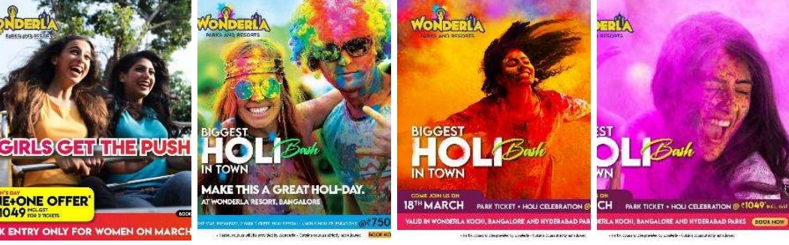
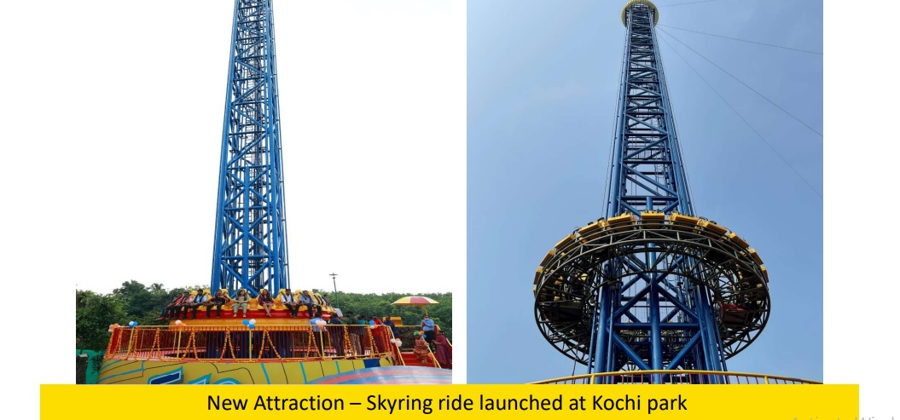
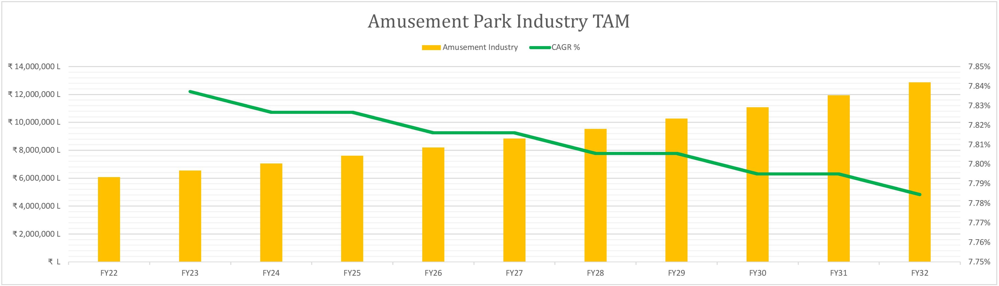
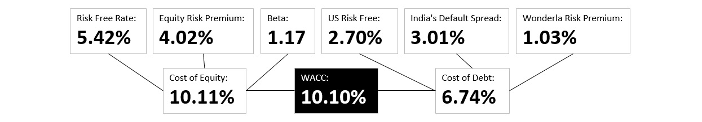
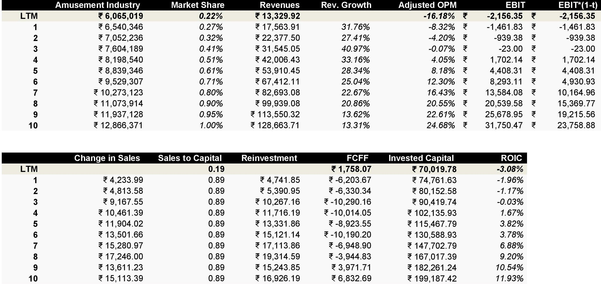
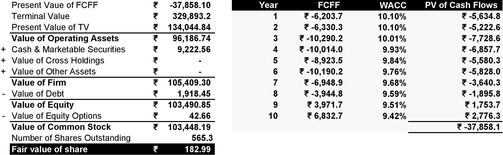

Wonderla Holidays - Are Roller Coasters Actually Safe?
Wonderla Holidays is engaged in the business of Amusement Parks and Resort. They currently has three operational parks, one each in Kochi, Bengaluru and Hyderabad established in 2000, 2005 and 2016 respectively. The Bengaluru park also has a resort with 4 banquet halls and 84 rooms. Average revenues over the last 5 years (FY15 to FY20) have been ₹79 crores in the Kochi park and ₹116 crores in the Bangalore park. As Hyderabad park was operationalized only in FY17, revenues have grown from ₹57 crores in FY17 to ₹74 crores in FY20.
Typical Target Audience is the Middle class which can spend ₹4,000-₹5,000 per trip for a Family. All three Parks have Land as well as Water rides under the same Ticket. Average ticket prices in the range of ₹800 – ₹1200 per person.
Wonderla's Hyderabad Park experiences weekend footfalls of around 9,000-10,000 and weekdays of around 4,000-5,000 as per the staff. Ticket prices have increased by 5% than pre-covid prices. All rides are free inside and waiting time for each ride is around 30-40 minutes. Food and beverages are priced very low compare to others (Customer delight). For example - mineral water, tea, coffee, snacks all are priced just as you"ll be charged at local store. Water park usually closes at 6 pm in summers.
Market that Wonderla can grow in: Wonderla already has a big presence in amusement park industry, but I can see them increase their presence in Resorts Business. They can expand their target market from kids to grown ups by expanding into waterparks for business adults on weekends. Record-breaking performance was registered on Women's Day and the Holy Bash in FY22 was well received. The Women’s day contributed to 32,632 footfall and the Holi celebrations contributed to 18,123 footfall.

Competitive Advantages (Entry Barrier): Once Wonderla opens an amusement park in a city, no competitor will be willing to enter the same city as both parks will die by splitting customers in peak seasons. The park with a bigger pocket will survive eventually. In the entertainment industry, people want variety and will be willing to visit 2-3 different amusement parks. Good for customers, bad for business!
Problem in Amusement Park Industry: Amusement Parks are entirely discretionary in nature. During recessions, the industry will hit worse. Amusement Park Industry is a cyclical industry. Most active time in amusement parks are during May and June (Summer Holidays). The kids acts as influencers and parents spend money to visit amusement parks. Parents want to avoid spending for a trip to tourist destinations. There is a cap to how much amusement parks can charge households.
The Customers, Pain Points and Pricing: The Target Audience is the Urban Middle Class Households with kids aged between 6 to 15, which can spend ₹4,000-₹5,000 per trip (family of four - parents and two kids) for a Family. All three Parks have Land as well as Water rides under the same Ticket. Average ticket prices in the range of ₹800 – ₹1200. It's is a good getaway for parents who want to avoid spending for a trip to tourist destinations. Spending ₹5,000 instead of ₹20,000 in a popular tourist destination seems like a nice deal!
Revenues to Profits: Wonderla Holidays biggest expenditure are employee benefit expenses (people handling the rides, sweepers, security guards etc), sub contractor charges, advertising and marketing expense, power and fuel, and repairs and maintainence. They made about -16.18% Operating Profit Margin in FY22, due to pandemic.
Strong Competition: Competition comes from Nicco Parks, Imagicaa World and other private players, which might contribute to reduction in market share of Wonderla. Adventure Island in Delhi (aka the best amusement park that I know) is owned by private players named IAL (International Amusement Ltd) & UL (Unitech Ltd).
How Much Capital Intensive?: Amusement Parks usually requires very high capital expenditure upfront. Huge Land Cost plus Big Ride Purchases, which have to be imported from abroad including taxes. Wonderla is trying to avoid big import cost by building their own rides. They have an in-house Ride Manufacturing Facility for the Amusement Parks in Kochi. They have constructed 42 rides in-house till now. Typical Capital Expenditure (Capex) for a New Park is ₹2,500 mn – ₹3,500 mn including Land cost. Maintainence of rides is important to avoid any mishaps and huge lawsuits. Once an amusement park is established, there would be less reinvestment. As the company matures, it can reduce it's reinvestment rate.

Strengths and Weakness: Wonderla is a Debt Free Company. 1 park to 2 park to 3 parks with each park breaking even in 2-3 years and cashflow feeding to next park. Story seem to be intact with Hyderabad ramping up, Chennai and Orissa lined up and management being prudently conservative in debt or any aggression (waited long to get local tax waived off on chennai, open to low capex model for Orissa). The weakness is the industry they operate in. They will start to be a cash machine once they crack themselves over all India.
My Narrative and Valuation
Based on the key pointers and fundamentals, here are some forecasts and judgements that I made to value Wonderla Holidays. It can be wrong, it's a forecast overall!
1) The Market Size: Amusement Park Industry in India is calculated based on ground up basis. Usually, Urban Middle Class Households visit amusement parks mainly during peak seasons. The first step is to find total number of urban households. So, I took the urban population numbers and divided by average family size in India. A rough estimate - 1,121 lakhs urban households! Next step is to find out how much a normal household (family of four) spend to visit an amusement park. Ticket Prices for Adult is ₹1,185 and Child is ₹960. I added food and beverages bill to ticket prices. The average money spend by households comes out to be ₹5,290. Even Wonderla acknowledges the fact that an average household spend around ₹4,000 to ₹5,000. The Urban Population Grows at a 2.26% CAGR and Ticket Prices will increase by GDP Growth CAGR - 5.42%. The Amusement Park Market TAM is ₹60,000 crores in FY22 and will grow to ₹128,000 crores in the next 10 years.
Assumption: Every household visits an amusement park ONCE per year. And they visit in the peak season.

2) The Market Share: Based on Amusement Park Industry, Wonderla has 0.22% market share. I forecast them to reach 1% of the market in the next 10 years. Even if someone thinks that I might be wrong in my TAM estimation and market share estmation, I am still giving Wonderla 10-fold revenue growth in the 10 years.
3) Revenues: Wonderla's revenues are ₹13,329.92 lakhs in FY22 and are projected to grow towards ₹128,663.71 lakhs. Revenues will grow exponentially when they keep expanding number of parks in different cities/states. Due to the pandemic, that process was put on halt. The biggest question is, can they open more parks and at the same time, handle efficiency in existing parks? It's a big challenge. Given that, Wonderla is debt free helps revenues to turn into profits!
4) Operating Margin: Operating Margins will move towards 25%. Wonderla were pulling out 25% to 28% Operating Margins before pandemic. As an amusement park becomes more and more popular due to advertising and marketing expenses, Wonderla can increase ticket prices to compensate for the fact that people are paying more for the experience and brand name.
5) Reinvestment: Wonderla Holidays make around ₹0.4 for every ₹1 invested capital in previous years (₹0.19 in FY22). The industry make about ₹0.8 for every ₹1 invested capital. Given that, the heavy expenditure comes from building an amusement park. After the infrastructure is ready, only repairs and maintainence is required. I believe Wonderla can converge to ₹0.8 in the next 10 years, and improve their return on capital to 11.93% by year 10.
6) The Cost of Capital: I used CAPM model to find out the Cost of Equity of 10.11% and risk premiums add-ons (India + Market + Company) to calculate the Cost of Debt of 6.74% (ICRA Rating - A+). The overall cost of capital (WACC), that I came up with is 10.1% based on capital structure of debt and equity.



Based on the narrative I explained above, I came up with a fair value of ₹182.99 per share. Wonderla's Stock is trading at ₹240 per share (July 29, 2022).
Thank you for reading! Check out my valuation by downloading the DCF Wonderla Holidays Analysis below.